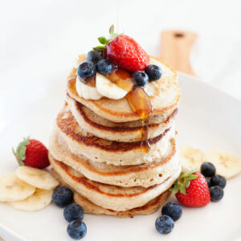

DOCTYPE.html
<head>
  <link rel="stylesheet" href="./estilos.css/estilos.css">
</head>
<header>
  <h1 style="text-align:center;color:brown;font-family:verdana">Receta de Panqueques de avena y manzana sin harina</h1>
</header>

<body>

  <nav>
    <a href="https://www.infoalimentos.org.ar/nutricion-y-estilos-de-vida/398-desayuno-por-que-es-importante"target="_blank">porque desayunar... lee aqui</a>
<br>
<br>

  </nav>

<section>
  

  </section>

<aside>
  <h2 style="color:black;font-family:verdana">Ingredientes:</h2>
  <br>
  <ul>
    <li>1 Taza de avena</li>
    <li>3 Claras de huevo</li>
    <li>1 Manzana</li>
    <li>Canela y Vainilla a gusto</li>
  </ul>
  <br>
  <h2 class="purple">Preparación</h2>
  <br>
  <ol>
    <li>Licúa los ingredientes. Puedes utilizar una licuadora o cualquier otro procesador de alimentos.</li>
    <li>En una sartén caliente coloca un poco de aceite y la cantidad justa de mezcla para formar una tortita.</li>
    <li>Deja un par de minutos y da la vuelta a tu pancake de avena fitness.(Truco: Sabrás que es hora de voltearlo cuando comiencen a formarse burbujas de aire en su superficie.)</li>
    <li>Sirve los panqueques de avena y manzana sin harina con las frutas que quieras y un poco de miel de maple, todo al gusto. También se puede preparar crema batida o salsa de chocolate, pero ten en cuenta que estarás agregando muchas más calorías a la receta.</li>

  </ol>
  <a href="./receta/receta de panqueques.pdf">baja la receta</a>

</aside>

<footer>
  <h2 id="purple">¿Porque desayunar siempre?</h2>
  El desayuno es la comida que nos brinda la energía que necesitaremos para la mayor parte del día, por lo que es especialmente vital para los deportistas. Es importante buscar platos que nos brinden las proteínas y calorías necesarias para un día de actividad intensa. Por ello, te recomendamos acompañar estos panqueques sin gluten con frutos secos, yogur y otros alimentos que contengan una gran cantidad de nutrientes concentrados.
<br>
<br>
<br>
<br>
<iframe width="560" height="315" src="https://www.youtube.com/embed/iII-V7KfIm8" title="YouTube video player" frameborder="0" allow="accelerometer; autoplay; clipboard-write; encrypted-media; gyroscope; picture-in-picture; web-share" allowfullscreen></iframe>
<br>
<br>
</footer>

</body>
